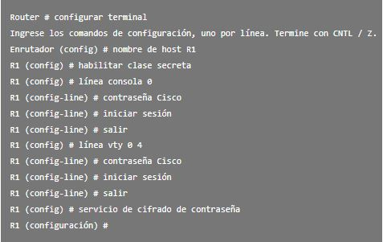
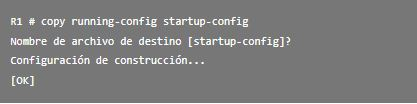

Pasos para la configuración del router
Te mostraremos cómo realizar la configuración básica de un router, ¡Comencemos!

 Nombre y contraseña
Nombre y contraseña
Lo primero que podemos hacer es nombrar el dispositivo para distinguirlo de otros routers y configurar las contraseñas.
En la siguiente imagen te mostramos cómo hacerlo:
 Configurar un banner
Configurar un banner
¿Qué son los banners? … en términos sencillos, son unos mensajes personalizables que aparecen cuando nos conectamos a los dispositivos a través consola.
Es por ello que configuraremos un banner para notificar legalmente el acceso no autorizado, como se muestra en el ejemplo.
 Guardar configuración
Guardar configuración
Para guardar la configuración que ya se ha realizado, se usa el siguiente comando
